Programming Project #3 (
Programming Project #3 (proj3)CS180: Intro to Computer Vision and Computational Photography
University of California, Berkeley
Programming Project #3 (proj3)

Text-Guided Editing


"Make it Real"

Waterfall / Skull Hybrid
A Lithograph of a Skull

Old Man / Campfire Anagram
An Oil Painting of People Around a Fire
Starter code can be found in the Notebook.
Use a pretrained flow model to generate and edit images. You will implement sampling procedures using PixNerd-XXL-P16-T2I, which generates $512\times512$ images; no model training is required in Part A. The project has three sections:
Complete the sampling, generation, and editing exercises in the notebook, and present your results on your project webpage.
START EARLY! Sampling takes time, so allow time to experiment with prompts and review your results.
Examples below are from our PixNerd notebook runs. Click a result to view it full-size. Follow this page's deliverables and match exercises by title if your notebook uses different section numbers.
PixNerd was trained as a text-to-image model, which takes text prompts as input and outputs images that are aligned with the text. However, a raw text string cannot be directly used as the model's input—we first convert it into prompt embeddings. The supplied model.encode(prompt) uses Qwen3 and caches these embeddings locally.
You will use your own prompts in later exercises for text-guided editing, visual anagrams, and hybrid images. For now, use the prompts specified in each section.
We begin with a recap of training and inference in flow matching.
Linear interpolation. We use linear interpolation, as in the optimal-transport (OT) formulation of flow matching. Given Gaussian noise $x_0=\epsilon\sim\mathcal{N}(0,I)$ and a clean image $x_1$, construct
$$x_t=(1-t)x_0+t x_1,\qquad t\in[0,1].$$
Thus $t=0$ is noise and $t=1$ is a clean image. Smaller $t$ means more noise.
Training. Sample a clean image $x_1$, independent Gaussian noise $x_0$, and $t\sim\mathcal{U}[0,1]$. Construct $x_t$ with the interpolation above. The model receives $(x_t,t,c)$, where $c$ is a condition such as a text prompt or class label, and is trained to predict the path velocity $x_1-x_0$:
$$\mathcal{L}(\theta)=\mathbb{E}\!\left[\left\|v_\theta(x_t,t,c)-(x_1-x_0)\right\|_2^2\right].$$
Training evaluates randomly selected times $t$; it does not run a sampling loop.
Sampling. Start from Gaussian noise at $t=0$ and follow the learned velocity field to $t=1$:
$$\frac{d x_t}{dt}=v_\theta(x_t,t,c).$$
Although each training pair defines a straight path, learned sampling trajectories are generally curved: the predicted direction changes with the current image and time. We therefore integrate the velocity field numerically, using Euler steps that recompute the velocity after each update.
Construct a noisy training input by interpolating between a clean image and Gaussian noise:
$$x_t=(1-t)\epsilon+t x_1,\qquad\epsilon\sim\mathcal{N}(0,I).\tag{A.1}$$
That is, given a clean image $x_1$, sample Gaussian noise and interpolate between the two. This is not just adding noise—we also scale the image. At $t=0$ we have noise; at $t=1$ we have the clean image.
Choose one image of your own for Sections 1.1–1.5; the Campanile is only an example. Use the supplied preprocessing to center-crop and resize it to $512\times512$, with RGB values in $[-1,1]$. Sample one Gaussian noise tensor $\epsilon$ and reuse it to construct noisy images at $t\in\{0.25,0.50,0.75\}$. Larger $t$ retains more image information.
Deliverablesinterpolate(image, noise, t).torch.randn_like is useful for sampling $\epsilon$.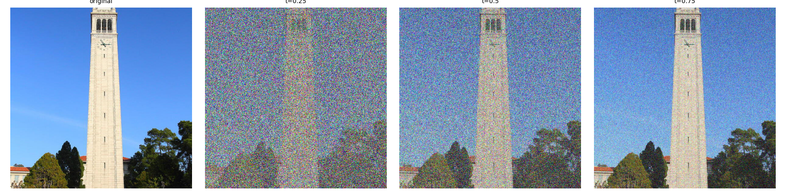
Use Gaussian blur as a baseline without a learned flow model. Averaging nearby pixels partially cancels independent, zero-mean noise. Stronger blur reduces noise but also removes image detail, so good results are difficult at high noise levels.
The image contribution in $x_t$ is scaled by $t$. For $t>0$, first restore its amplitude, then blur:
$$\frac{x_t}{t}=x_1+\frac{1-t}{t}\epsilon,\qquad \hat{x}_1^{\mathrm{blur}}=G_\sigma\!\left(\frac{x_t}{t}\right).$$
Here $G_\sigma$ is a Gaussian filter with standard deviation $\sigma$. Dividing by $t$ corrects the image amplitude; it does not remove noise. Apply this baseline to the saved inputs at $t=0.25,0.50,0.75$.
Deliverablestorchvision.transforms.functional.gaussian_blur is
useful. Here is the documentation.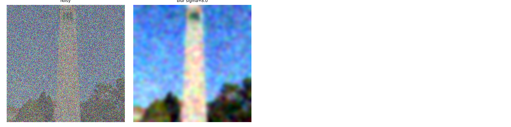
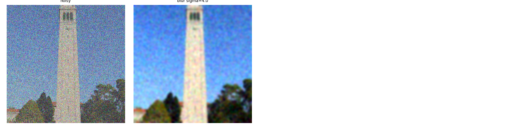
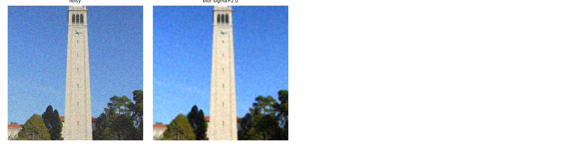
Now, we'll use a pretrained flow model to denoise. The supplied predict_velocity(x,t,condition) predicts the velocity at the noisy image and time. We can extrapolate to the clean endpoint using one prediction:
$$\hat{x}_1=x_t+(1-t)v_\theta(x_t,t,c).\tag{A.2}$$
Because this model was trained with text conditioning, we also need a text prompt embedding. Use the embedding for "a high quality photo". Later on, you can use your own text prompts.
one_step_denoise.torch.no_grad() when sampling to save memory. No gradients or model training are needed.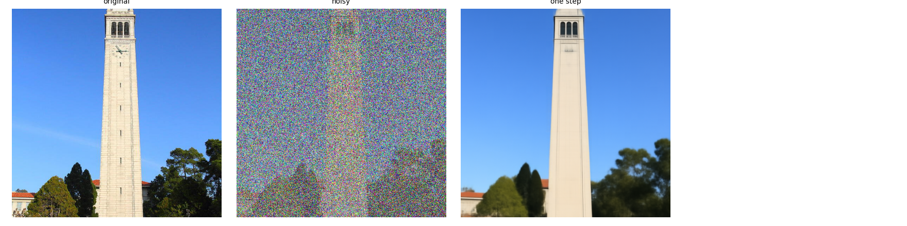
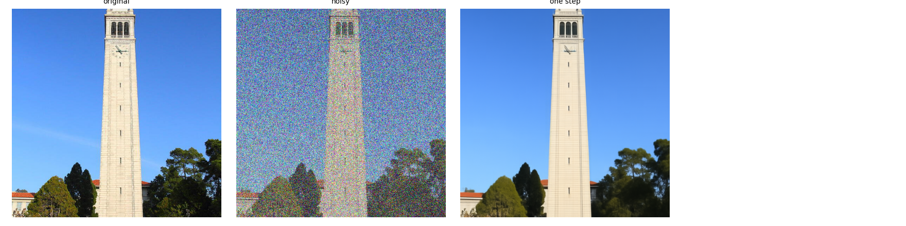
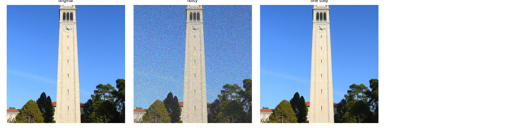
In Section 1.3, we added $(1-t)\hat v_t$ to the noisy image to estimate the clean image. Here, we will visualize what the model adds.
Since we know the original image, we also know exactly what should be added: $x_1-x_t$. Compare this ground-truth update with the model's predicted update. An error heatmap shows where they differ most.
Use the same image of your own and saved noisy inputs from Section 1.1, at $t=0.25,0.50,0.75$, with the prompt "a high quality photo".
matplotlib.pyplot.imshow with a linear color scale for the error maps. Choose vmin and vmax to make the errors visible, keeping the same limits across all three times.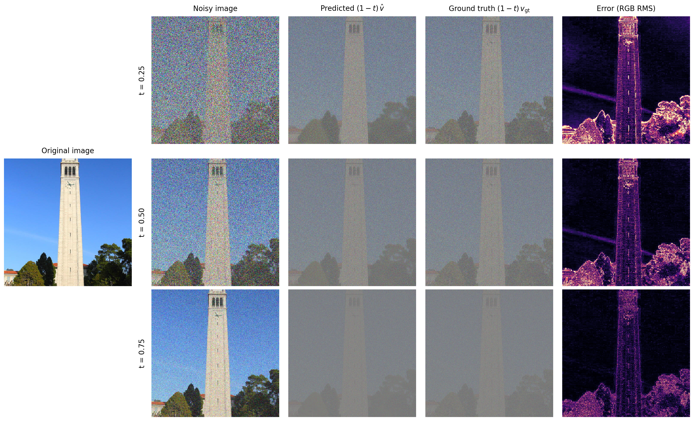
One-step denoising can be inaccurate because the learned velocity changes as we move along the path. Instead, take a small step, predict a new velocity, and repeat. We use Euler integration:
$$x_{t+h}=x_t+h\,v_\theta(x_t,t,c).\tag{A.3}$$
Implement euler_sample(x_start,t_start,step_size,velocity). Use $h=0.02$ and shorten the last step if necessary to end exactly at $t=1$.
euler_sample. Starting with the saved $t=0.50$ noisy version of your own image, perform 25 Euler updates.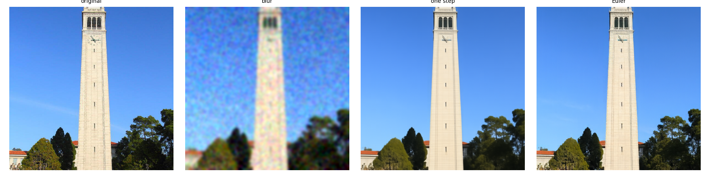
In Section 1.5, we use the flow model to denoise an image. Another
thing
we can do with the euler_sample function is to
generate
images from scratch. We can do this by setting t_start = 0
and passing x_start as random noise. This effectively denoises pure noise.
Please
do this, and show 5 results of the prompt"a high quality photo".
Deliverables
Hints
torch.randn to make the noise..to(device).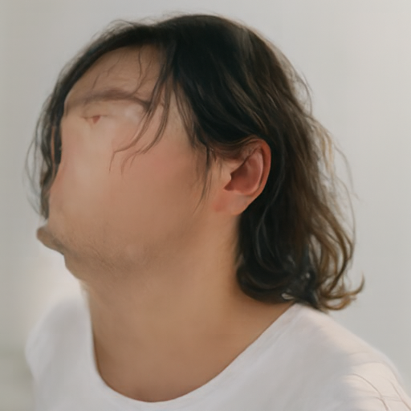
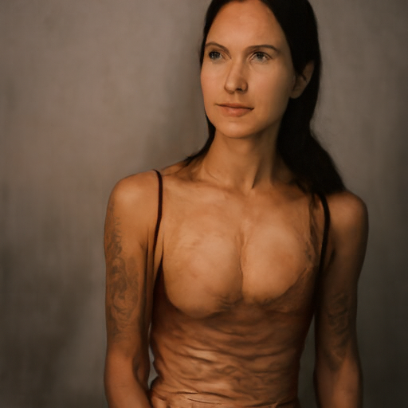
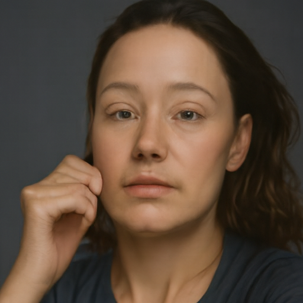
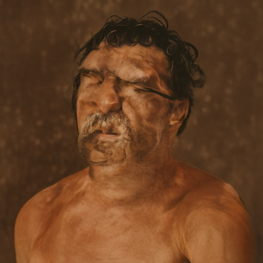
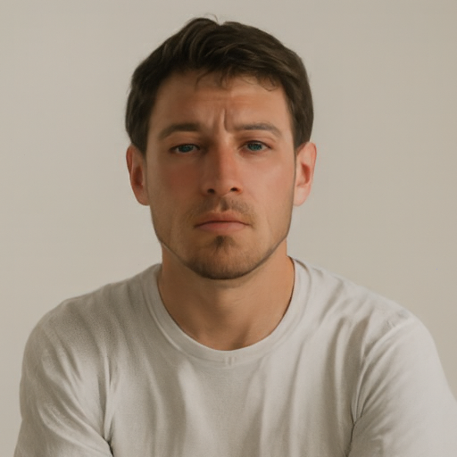
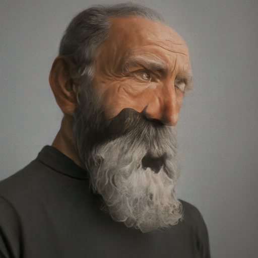
Conditional generation means generating an image given information such as a text prompt. Section 1 used a fixed prompt. Here you will strengthen the effect of that prompt using classifier-free guidance (CFG).
You may have noticed that the generated images in the prior section are not very good. To improve prompt alignment and image quality, at the expense of diversity, we can use Classifier-Free Guidance (CFG).
Evaluate the same image and time with a conditional prompt and an empty-string prompt, obtaining $v_c$ and $v_u$. Combine them using:
$$v_{\mathrm{cfg}}=v_c+w(v_c-v_u).\tag{A.4}$$
Use $w=7$ and Euler step size $h=0.02$. Here $w=0$ is ordinary conditional sampling.
Deliverablescfg_velocity."a high quality photo", using the same initial noises as Section 1.6. Compare the results.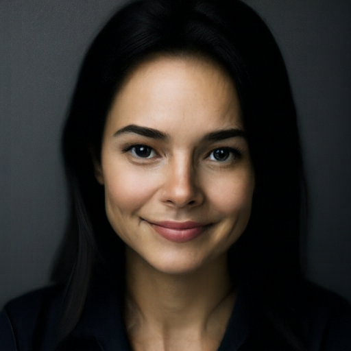
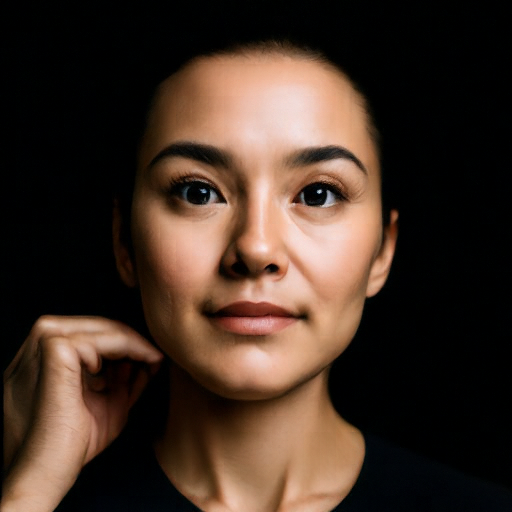
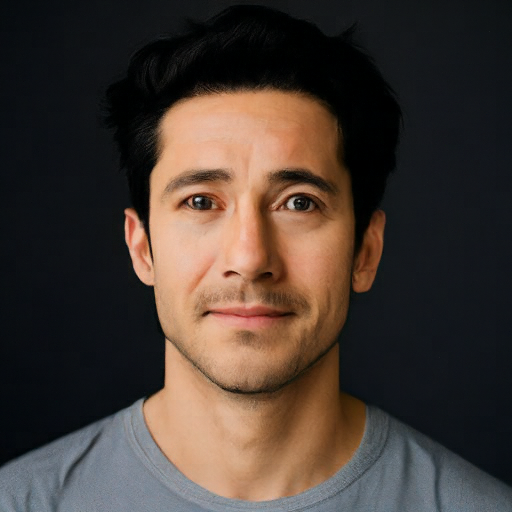
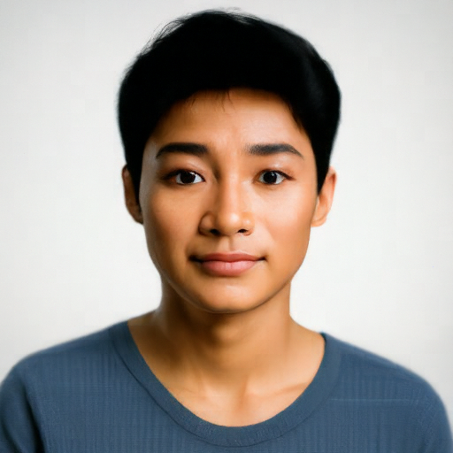
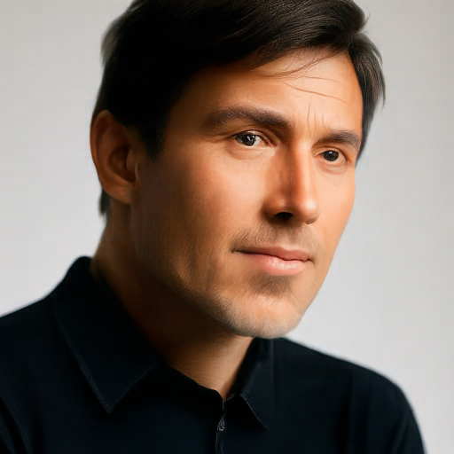
Use flow sampling to edit existing images and generate optical illusions. Throughout this section, use Euler step size $h=0.02$, CFG weight $w=7$, and the empty prompt "" for the unconditional prediction.
Download the Campanile image for Sections 3.1 and 3.2.
In Section 1.5, we take a real image, add noise to it, and then denoise. This effectively allows us to make edits to existing images. The more noise we add, the larger the edit will be. This works because in order to denoise an image, the flow model must to some extent "hallucinate" new things -- the model has to be "creative." Another way to think about it is that the denoising process "forces" a noisy image back onto the manifold of natural images.
Here, we're going to take the original Campanile image, noise it a little, and force it back onto the image manifold with the generic photo prompt. Effectively, we're going to get an image that is similar to the Campanile (with a low-enough noise level). This is inspired by the SDEdit algorithm.
To start, please run the forward process to get a noisy Campanile, and
then run the edit function using a
starting time of $[0.02,0.04,0.06,0.10,0.14,0.25,0.5]$ and show the results, labeled with
the
starting time. You should see a series of "edits" to the original
image,
gradually matching the original image closer and closer.
"a high quality photo"Hints
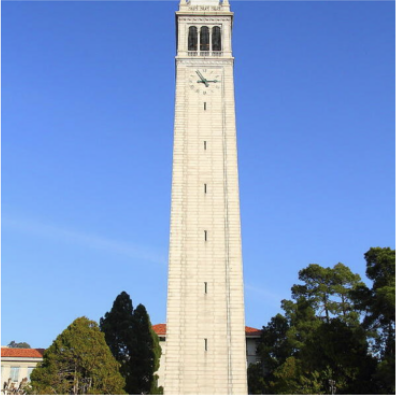
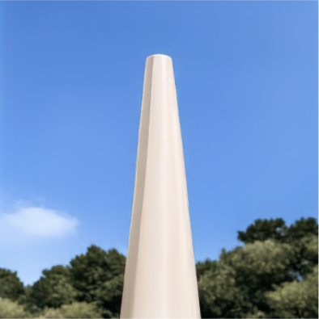
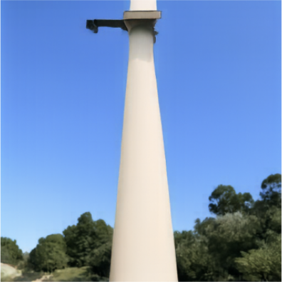
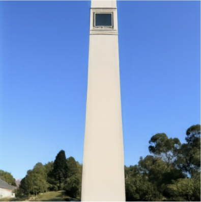
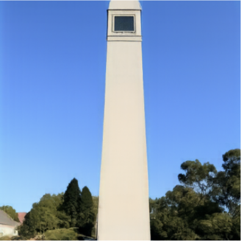
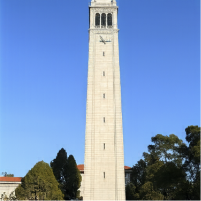
At $t=0.02$ only a pale vertical shape against blue survives. The tower sharpens as the starting time rises, but the clock face and belfry arches do not come back until $t=0.25$.
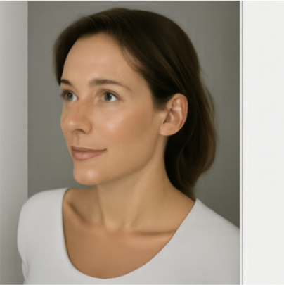
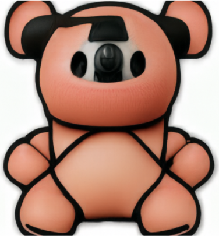
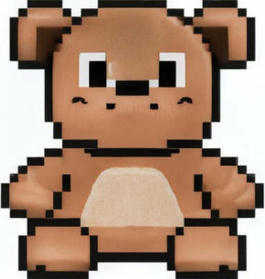
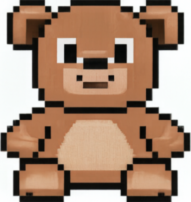
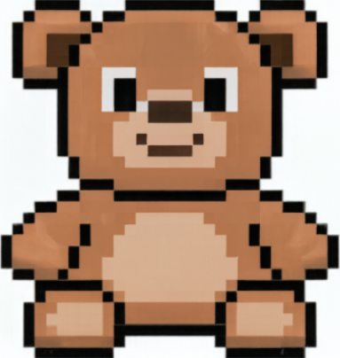
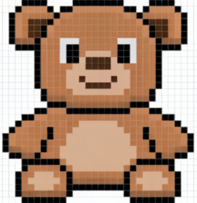
Starting times run from most noise (left) to least. At $t=0.02$ the input is gone entirely and the sampler generates an unrelated photo; by $t=0.25$ the pixel art returns almost unchanged.
This procedure works particularly well if we start with a nonrealistic image (e.g. painting, a sketch, some scribbles) and project it onto the natural image manifold.
Please experiment by starting with hand-drawn or other non-realistic images and see how you can get them onto the natural image manifold in fun ways.
We provide you with 2 ways to provide inputs to the model:
Please find an image from the internet and apply edits exactly as above. And also draw your own images, and apply edits exactly as above. Feel free to copy the prior cell here. For drawing inspiration, you can check out the examples on this project page.
Deliverables
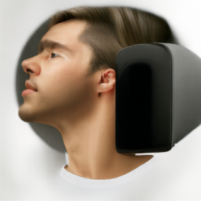
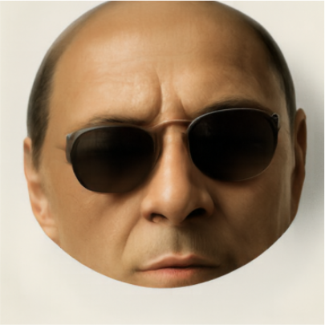
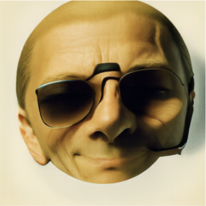
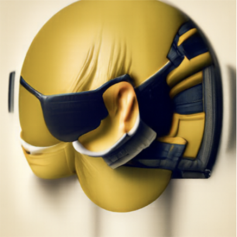
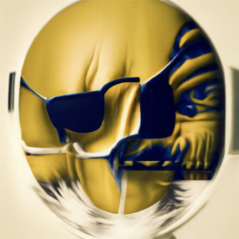
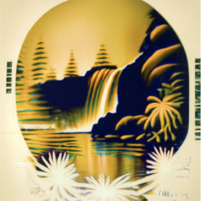
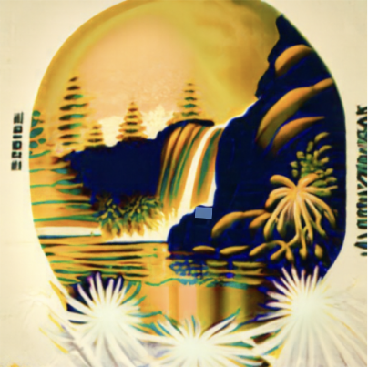
The same sweep on a downloaded image. Between $t=0.04$ and $t=0.14$ the sampler reads the oval frame and dark shapes as a face, and only the original's color palette survives; by $t=0.25$ the waterfall is back.
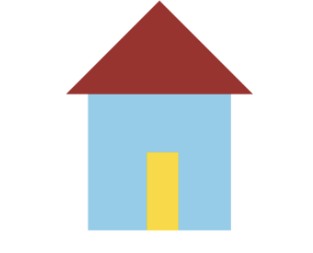
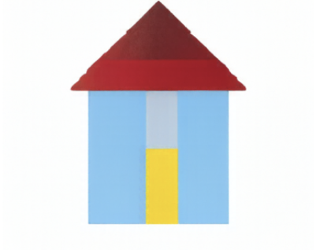
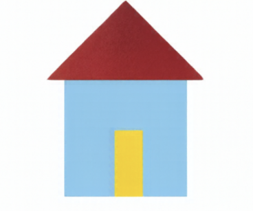
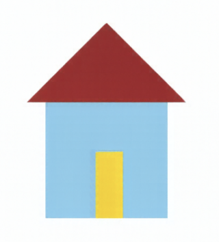
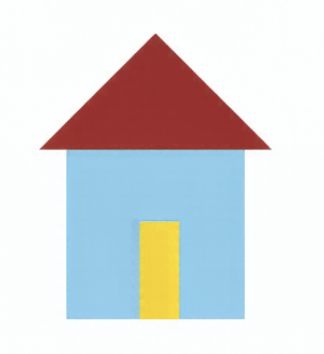
A flat drawing gives the sampler very little to hold on to: at $t=0.02$ it produces a portrait instead, and at $t=0.04$–$t=0.06$ it reads the roof and door as a figure under a peaked shape. The drawing returns by $t=0.10$.
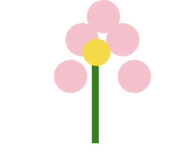
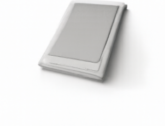
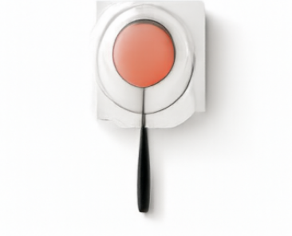
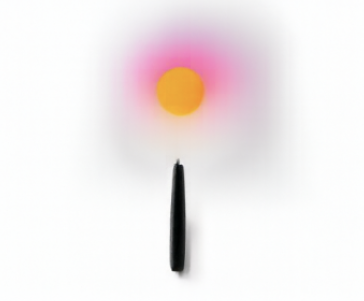
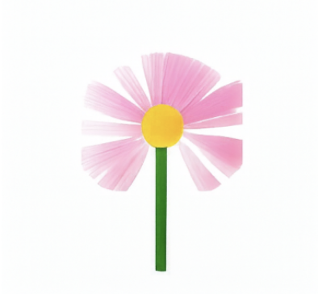
The low starting times keep only the round pink mass and the stem, reading them as an object on a stick. A recognizable flower appears at $t=0.10$, and by $t=0.25$ the petals are back to flat circles.
Use the same image-to-image editing procedure as Section 3.1, but replace
"a high quality photo" with a prompt of your choice that describes
the desired edit. The prompt guides how the model changes the image.
Prompt: "a photograph of a rocket on a launch pad". The prompt wins at the low starting times and the tower wins at the high ones; in between, at $t=0.06$–$t=0.14$, the result keeps the Campanile's framing and proportions while the surface becomes a rocket.
Prompt: "a photograph of a brown bear in a forest". Only $t=0.02$ reaches an actual photograph. At $t=0.04$–$t=0.06$ the prompt redraws the toy as a smoothly shaded illustration.
In this part, we are finally ready to implement Visual
Anagrams and create optical illusions with flow models. In
this part, we will create an image that looks like "an oil
painting of an old man", but when flipped upside
down will reveal "an oil painting of people around a campfire".
To do this, we will denoise an image $x_t$ at step $t$ normally with the prompt $p_1$, to obtain velocity estimate $v_1$. But at the same time, we will flip $x_t$ upside down, and denoise with the prompt $p_2$, to get velocity estimate $v_2$. We can flip $v_2$ back, and average the two velocity estimates. We can then perform a Euler step with the averaged velocity estimate.
The full algorithm will be:
$$ v_1 = \text{CFG velocity}(x_t, t, p_1) $$
$$ v_2 = \text{flip}(\text{CFG velocity}(\text{flip}(x_t), t, p_2)) $$
$$ v = (v_1 + v_2) / 2 $$
where CFG velocity is the guided flow prediction from Section 2.1, $\text{flip}(\cdot)$ rotates the image by 180 degrees (flips both spatial axes, not just one), and $p_1$ and $p_2$ are two different text prompt embeddings. And our final velocity estimate is $v$. Please implement the above algorithm and show example of an illusion.
Deliverablesvisual_anagrams functionIn this part we'll adapt Factorized Diffusion and create hybrid images just like in project 2.
In order to create hybrid images with a flow model we can use a similar technique as above. We will create a composite velocity estimate $v$, by predicting velocity with two different text prompts, and then combining low frequencies from one velocity estimate with high frequencies of the other. The algorithm is:
$ v_1 = \text{CFG velocity}(x_t, t, p_1) $
$ v_2 = \text{CFG velocity}(x_t, t, p_2) $
$ v = f_\text{lowpass}(v_1) + f_\text{highpass}(v_2)$
where CFG velocity is the guided flow predictor, $f_\text{lowpass}$ is a low pass function, $f_\text{highpass}$ is a high pass function, and $p_1$ and $p_2$ are two different text prompt embeddings. Our final velocity estimate is $v$. Please show an example of a hybrid image using this technique (you may have to run multiple times to get a really good result for the same reasons as above). We recommend that you use a gaussian blur of kernel size 265 and sigma 16 at 512×512. Use the composite velocity in the Euler update. The high-pass component is the prediction minus its low-pass version.
Deliverablesmake_hybrids functiontorchvision.transforms.functional.gaussian_blur This project was a joint effort by Daniel Geng, Ryan Tabrizi, Hang Gao, Jingfeng Yang, Jameson Crate, Himanshu Gaurav Singh, Eric Khodorenko, and Kelvin Li, advised by Liyue Shen, Andrew Owens, and Alexei Efros.